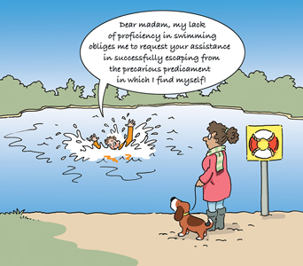
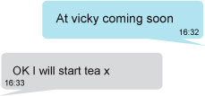

5 Textual meaning – organising messages to make sense in context¶

Figure 9 A suitable context for spontaneity
In this section we will look at how we organise our messages. This is an aspect of the textual metafunction. The lexicogrammatical choices we make not only construct a representation of experience (the ideational metafunction) and signal social roles and status (the interpersonal metafunction), but also provide a way of organising a message so as to make it accessible to the listener/reader, taking into account the context, channel and medium in which the text is produced. The first activity in this section is intended to show how language is packaged in order to help the reader make sense of what is being talked about. Three key questions can be asked about any act of communication which help to determine how it is or needs to be organised:
Is it planned or spontaneous?
Is it interactive or more of a monologue?
Does the verbal message stand alone or does it work with other modes of meaning – e.g. images, pointing and gesture?
These three variables form a spectrum of possibilities which in SFL is called a mode continuum. At one end of this spectrum, face-to-face conversation would normally be spontaneous and interactive, and the verbal language used would normally be accompanied by physical gestures. In many cases, language might be taking second place, for example when it is mainly being used to accompany actions. At the other end, an academic article will be carefully planned, with no reader input, and with very few other modes of meaning (though in some cases, graphs, diagrams and charts may well be used alongside the words). This cartoon above plays on an apparent mismatch between the highly planned, wordy monologic mode of expression being used by the person in the pond and the apparent need for spontaneous, action-focused talk, given the situation.
However, there is no clear cut distinction between speech and writing. The mode continuum is the movement from more spontaneous spoken-like language to more formal, written-like language. Face-to-face informal conversation between friends may have characteristics similar to written communication between friends while a political speech may be organised in ways similar to newspaper reports. Communications via phones and the internet are useful in demonstrating the ways in which contextual variables, such as how well the interactants know each other, where they are, and the immediacy of response, can all work to blur the distinction between grammar in speech and in writing. For example, when exchanging text messages or chatting on social media, our language often reflects the relatively immediate timeframe and extent of contextual knowledge shared between participants, aspects which are often associated with conversation.
Take this brief exchange of texts:

Figure 10 Short text ‘conversation’
The second texter has responded knowing that in fact ‘vicky’ is the name of a nearby park (Victoria Park) and both participants are working on the basis that the communication will be almost instant, because the second person will be making a meal to suit the timing of the first person’s journey home ‘soon’. The way in which texts are nowadays represented on a screen, using speech bubbles, is an acknowledgement of their conversational nature, as is the tendency to omit any form of punctuation. Because of the way in which text messages automatically flag the sender’s name, there is no need for greeting or signing off, which is more like face-to-face conversation (where we know who is speaking because they are in front of us) than typical written contexts. On the other hand, there are features here that are associated with writing rather than speech – e.g. the first text message omits the personal pronoun ‘I’ and the verb ‘am’, which might be expected in speech abbreviated to I’m (though the pronoun is retained in the reply), and the second uses xto indicate affection (or a kiss).
5.1 It’s all in the packaging¶
In the next activity, you will look more closely at ways of organising messages, by analysing two different texts.
Activity 9: Comparing texts at different places on the mode continuum¶
Timing: 20 minutes
Question¶
Compare the two short texts below, paying particular attention to the noun groups that have been underlined for you. (Don’t worry about why some have not been underlined.)
What differences do you notice in the way meaning is packaged?
How do you account for these differences? (The speaker is describing a friend’s first skiing holiday. Dashes indicate hesitations or repetitions.)
He was coming down this – this track and he’s been a few times so he’s got some idea of it um so he said that he saw this slight rise so he said he headed up the rise and he found out it was a ski jump! he– he’d lost one ski at the top and eh apparently he was flying through the air with one leg up in the air with a ski on it and he landed head first in the snow but he caught his headhis mate with him, he hit a tree on the way down came back all bruised and scraped … Reference: (Eggins and Slade, 1997, p. 250)
The steady increase in life expectancy in human populations shows that longevity is a plastic phenomenon. Although lifespans are species-specific, they can be modified greatly by the environment as well as genes. For many human populations, the fixed three score years and ten allotted for human longevity are already but a distant memory. Much of this increase in lifespan has been achieved by improvements in public health, medical care and domestic circumstances. We are beginning to view ageing-related damage as a side-effect of other adaptive processes. This may allow us to reduce the impact of ageing-related diseases as the limits on human lifespan recede. Reference: (Adapted from Partridge and Gems, 2002, p. 921)
Discussion¶
A long, tightly structured unit at the start of the clause is not easily achieved in the dynamic context of speech, which allows no time for preparation and places a heavy information-processing load on the listener, so starting with an elaborate idea is not typical in speech. In Text A, therefore, the pronounhe is repeated throughout without any descriptive elements or elaboration about the person being referred to. A writer, however, has the opportunity to create such structures in a more considered way, free from the pressures of production in ‘real time’. Moreover, units in written text can be rapidly scanned by eye and so writers may compress more information into fewer words. Such units are described as ‘lexically dense’ as they have a high number of lexical words, words that carry the main content of a text. Lexically dense text is more easily understood when reading a written text than in the rapid processing necessary to understand spoken texts.
The frequent use of pronouns as participants in Text A reflects its subject matter – a story about a friend. On the other hand, Text B, as noted, has lengthy noun groups (e.g. the fixed three score years and ten allotted for human longevity, the impact of ageing-related diseases), which allows more information to be packed into these parts of the clause. Academic texts frequently have long noun groups as the readership is expected to be able to handle meanings compressed into such groups as a result of their familiarity with these types of texts and with the technical concepts of the field of study. The aim of the text is to move the argument forward as succinctly as possible. Information that can be taken for granted as understood therefore gets packaged up as long noun groups. The use of these abstract and often complex noun groups reflects the subject matter, while in Text A the nouns refer to the people and things that the story is about.